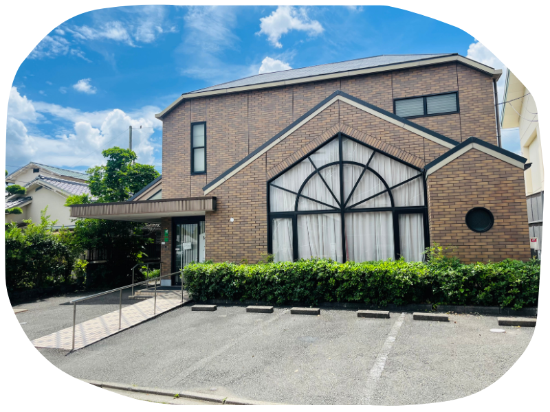

ファミリークリニック京都府向日市・小児科／内科／アレルギー科
075-922-2468FAX 075-922-7801
さくらのき米山ファミリークリニック
| 時間 | 月 | 火 | 水 | 木 | 金 | 土 |
|---|---|---|---|---|---|---|
| 9:00〜12:00 | 小児科・内科・アレルギー科○ | 小児科・内科・アレルギー科10:00〜12:00の診療となります△10:00〜 | 小児科・内科・アレルギー科○ | 小児科・内科・アレルギー科10:00〜12:00の診療となります△10:00〜 | 小児科・内科・アレルギー科○ | 小児科・内科・アレルギー科○ |
| 13:00〜16:00 | 訪問診療のみ訪 | 訪問診療のみ訪 | 訪問診療のみ訪 | 訪問診療のみ訪 | 訪問診療のみ訪 | 休診ー |
| 16:30〜19:00 | 小児科・内科・アレルギー科○ | 休診ー | 小児科・内科・アレルギー科○ | 休診ー | 小児科・内科・アレルギー科○ | 休診ー |
○:通常診療
△:10:00〜12:00の診療となります
訪:訪問診療のみ対応(外来受付は休診)
休診日:日曜日・祝日 / 13:00〜16:00は訪問診療のみとなり、外来受付はございません。
診療時間・アクセスの詳細はこちらMEDICAL INFORMATION
5 REASONS TO BE CHOSEN
Feature 01
小児科・内科・アレルギー科を中心に、赤ちゃんからご年配の方まで、ご家族皆さまの診療にワンストップで対応します。

Feature 02
お子様が病気中・病気回復期でも、クリニック併設の病児保育施設で安心してお預けいただけます。送迎サービスもご利用いただけます。
Feature 03
花粉症やアレルギー性鼻炎、気管支喘息、食物アレルギーなど、お子様からご年配の方まで幅広いアレルギー疾患に対応します。
Feature 04
寝たきりの方やご高齢の方など、通院が困難な場合もご自宅での診療が可能です。

Feature 05
京都府向日市の地域医療を支える"かかりつけ医"として、日々の健康相談から在宅医療まで幅広くサポートします。
GREETING
京都府向日市にあります「さくらのき米山ファミリークリニック」では、小児科・内科・アレルギー科の外来はもちろん、在宅医療(訪問診療と往診)、病児保育「カウベルキッズ」にも力を入れております。
また、病診連携・診診連携も積極的に行い、高度な検査や入院が必要になった場合は専門の病医院をご紹介し、専門外の疾患については他院に紹介依頼をいたします。
お子様からご年配の方まで、ご家族皆さまの身近なかかりつけ医として、クリニックでの診療・在宅医療とさまざまな形で患者さまをサポートしてまいります。
院長 米山 知寿
ごあいさつを詳しく見る